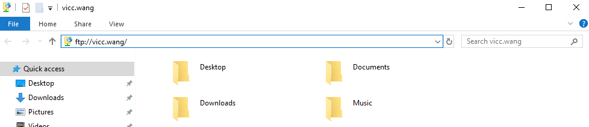

vsftpd是一个开源的轻量级的常用ftp服务器
约400KB
sudo apt-get install vsftpd
sudo service vsftpd start
sudo vim /etc/vsftpd.conf
找到以下行，修改一下，允许可写
#设定可以进行写操作 write_enable=YES #设定上传后文件的权限掩码。 local_umask=022
sudo service vsftpd restart
通过ftp连接树莓派系统，以用户名pi登录，密码是pi的密码

ftp的根目录是/home/pi，即pi用户的HOME目录
/home/pi
可上传或下载文件了